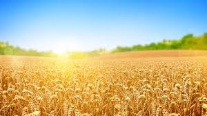

wheat is one of the world's most commonly consumed cereal grains. It comes from a type of grass (Triticum) that is grown in countless varieties worldwide. Bread wheat, or common wheat, is the primary species. Several other closely related species include durum, spelt, emmer, einkorn, and Khorasan wheat. White and whole-wheat flour are key ingredients in baked goods, such as bread. Other wheat-based foods include pasta, noodles, semolina, bulgur, and couscous. Wheat is highly controversial because it contains a protein called gluten, which can trigger a harmful immune response in predisposed individuals. However, for people who tolerate it, whole-grain wheat can be a rich source of various antioxidants, vitamins, minerals, and fiber. .
|  | Wheat is a highly-nutritional and widely-cultivated cereal grain. For over 7 centuries, wheat has been raised and harvested in many countries around the world. It’s one of the world’s most important crops and holds the title of the second most produced grain in the world, beaten only by corn. Over 750 million metric tons of wheat were produced in 2017/18 worldwide |
The Fender Mustang was introduced in 1964 as the basis of a major redesign of Fender's ...
The Fender Stratocaster or "Strat" is one of the most popular electric guitars of all time ...
The Gibson Les Paul is a solid body electric guitar that was first sold in 1952 ...
The Fender Stratocaster or "Strat" is one of the most popular electric guitars of all time, and its design has been copied by many guitar makers. It was designed by Leo...
The Gibson Les Paul is a solid body electric guitar that was first sold in 1952. The Les Paul was designed by Ted McCarty...
Hohner's "Clavinet" is essentially an electric clavichord.
Hohner's "Clavinet" is essentially an electric clavichord.
Hohner's "Clavinet" is essentially an electric clavichord.
The ARP Odyssey was introduced in 1972.
The ARP Odyssey was introduced in 1972.